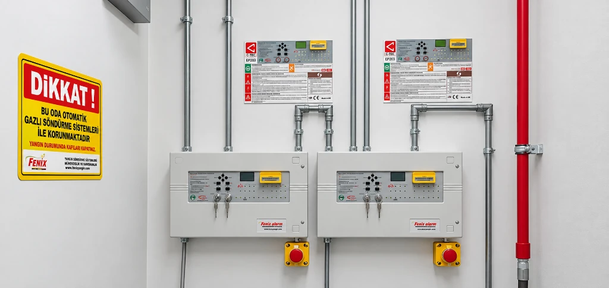

Gazlı Yangın Söndürme Periyodik Bakım ve Teknik Servis
TSE-HYB onaylı yetkili teknik servisimizle gazlı yangın söndürme sistemlerinin periyodik mekanik denetimleri, ultrasonik sıvı seviye ölçümleri, duman dedektörü testleri ve 7/24 acil müdahale hizmeti veriyoruz.

Periyodik Bakım ve Servis Kapsamı
TSE standartlarında sunduğumuz periyodik bakım hizmeti, sisteminizin her an deşarja hazır olduğunu yasal olarak belgeler; Kidde marka sistemlerin bakımı ve dolumu dahil olmak üzere tüm küresel onaylı ekipmanlarda sertifikalı servis desteği sunuyoruz.
Ultrasonik Sıvı Gaz Seviye Ölçümü
Silindiri yerinden sökmeden ultrasonik dalgalarla sıvı seviyesi ölçülür ve net gaz kaybı oranı tespit edilir.
Mekanik Vana, Boru ve Nozul Muayenesi
Silindir manometre basınçları, kollektör çekvalfleri, boru askı rijitliği ve nozul orifis temizliği denetlenir.
Duman Dedektörü Kalibrasyon ve Testi
Optik duman ve sıcaklık dedektörleri aerosol test gazıyla tetiklenir; tepki süreleri ve loop sürekliliği ölçülür.
Solenoid ve Aktivasyon Simülasyonu
Solenoid başlıkları güvenli simülatöre bağlanarak panel tetikleme akımı, gecikme süresi ve röle çıkışları test edilir.
Panel Akü Kapasite ve Şarj Kontrolü
Elektrik kesintisinde sistemin en az 24 saat bekleme ve 30 dakika alarm verebilmesi için akü deşarj testi yapılır.
Söndürme Paneli & EN 12094 Denetimi
C-TEC EP203 vb. EN 12094-1 ve EN 54 onaylı konvansiyonel/adresli gaz söndürme kontrol panellerinin lojik tetikleme, çapraz bölge (cross-zoning) ve arıza sinyal testleri; kapsamlı yangın algılama sistemi bakımı ve dedektör kalibrasyonu.
TSE Onaylı Periyodik Kontrol Formu
İtfaiye ve sigorta denetimlerine ibraz edilecek, ıslak imzalı, karekodlu ve TSE-HYB logolu resmi servis raporu teslimi.
Neden Fenix Yangın Periyodik Bakım?
Yetkisiz firmalarca yapılan bakımlar yangın anında sistemin devreye girmemesine veya cezai yaptırımlara neden olabilir.
TSE-HYB 13345 Yetki Belgesi
Türk Standardları Enstitüsü Hizmet Yeri Yeterlilik Belgesi ile onaylanmış yasal teknik servis kadrosu.
7/24 Kesintisiz Acil Servis
Bakım anlaşmalı müşterilerimize günün her saati müdahale edebilen nöbetçi mobil teknik servis araçları.
Ultrasonik Seviye Ölçümü
Tüp sökülmeden yerinde yapılan ölçümle sistem durdurulmaz, tesisiniz bir an bile korumasız kalmaz.
Dijital Bakım Takip ve Arşiv
Her silindirin hidrostatik test yılı, gaz seviyesi ve servis geçmişi dijital sistemimizde takip edilir.
Süreç Nasıl İlerliyor?
Periyodik bakım hizmetimiz, NFPA 25 ve NFPA 2001 kılavuzlarına göre 6 adımlı kontrol listesiyle uygulanır.
Saha İncelemesi & Kayıt
Sistemin geçmiş servis formu incelenir; yangın paneli olay kayıtları ve varsa arıza logları analiz edilir.
Mekanik & Basınç Denetimi
Silindir manometre basınçları okunur, vana contaları, boru askı rijitliği ve nozul açıları fiziksel olarak denetlenir.
Ajan Seviye Ölçümü
Ultrasonik cihazla tüp sökülmeden sıvı seviyesi tespit edilir; gaz kaybı %5'i aşıyorsa yeniden dolum kararı verilir.
Algılama & Senaryo Testi
Duman dedektörleri tetiklenir; siren, flaşör, yangın damperi kapatma ve klima trip senaryoları simüle edilir.
Akü & Güç Kaynağı Testi
Yangın paneli şebeke beslemesi kesilerek akülerin yük altındaki gerilimi ve deşarj süresi ölçülür.
TSE Onaylı Bakım Formu
Tüm ölçüm değerlerini içeren TSE-HYB logolu resmi periyodik kontrol raporu düzenlenip yetkiliye teslim edilir.
Periyodik Bakım Sunduğumuz Tesisler
Fenix Yangın, Türkiye'nin lider kurumlarının kritik tesislerinde yıllık bakım anlaşmalarıyla 7/24 hizmet vermektedir.
Periyodik Bakım Kapsamındaki Sistemler
Tüm gazlı ve otomatik söndürme sistemleri için standartlara uygun kontrol listeleriyle periyodik servis sağlıyoruz.
FM200 Bakım & Servis
Ultrasonik sıvı seviye ölçümü, manometre kontrolü ve solenoid testleri.
Sistemi İncele ÇEVRECİ TEMİZ GAZNovec 1230 Bakım & Servis
FK-5-1-12 azot basınç denetimi, dedektör testleri ve vana sızdırmazlık kontrolü.
Sistemi İncele YÜKSEK BASINÇ CO2CO₂ Bakım & Tartım
Mekanik tartım tartısı ile tüp ağırlık kontrolü, korna ve pnömatik gecikme testleri.
Sistemi İncele MİKRO HORTUM SİSTEMİPano İçi Sistem Bakımı
Polimer algılama hortumu basınç kontrolü ve pano alarm entegrasyon testi.
Sistemi İncele 6 AYLIK ZORUNLU BAKIMDavlumbaz Bakımı
NFPA 96 gereğince 6 ayda bir eriyebilir lehim dedektör değişimi ve nozul temizliği.
Sistemi İncele AEROSOL JENERATÖRÜAerosol Sistem Bakımı
Elektriksel aktivatör omik direnç ölçümü ve jeneratör kullanım ömrü kontrolü.
Sistemi İnceleGerçek Saha Test, Bakım ve Yenileme Uygulamamız
TSE-HYB standartlarında yürüttüğümüz hidrostatik basınç testi, vana revizyonu ve sertifikalı dolum saha örneğimiz.
Bomonti Hilton Otel — Novec 1230 Hidrostatik Test ve Sertifikalı Gaz Dolumu

İstanbul'un önde gelen turizm ve kongre merkezlerinden Bomonti Hilton Otel bünyesinde bulunan Novec 1230 (FK-5-1-12) gazlı söndürme sistemlerine ait silindirlerin akredite hidrostatik testleri ve sertifikalı Novec 1230 gaz dolumu yapılarak teslim edilmiştir.
TSE-HYB standartlarında yürütülen periyodik bakım ve yenileme sürecinde; silindirlerin saha sökümü, yüksek basınçlı su ceketli mukavemet testi, vana O-ring/conta değişimleri, kuru azot (N₂) basınçlandırması ve yeniden kollektör montajı eksiksiz tamamlanmıştır.
Saha Mühendislik ve Uygulama Akışı (İnfografik Süreç Özeti)
Tüm tamamlanan 8 gerçek saha projemizi ve infografik vaka analizlerimizi inceleyin →
Sistemlerinizi Düzenli Bakımla Güvence Altına Alın
TSE-HYB yetkili servisimizle periyodik bakım anlaşması yapın; sisteminizi her an çalışır tutarken 7/24 acil servis güvencesine sahip olun.
Sıkça Sorulan Sorular
Yangın söndürme sistemlerine ne sıklıkla bakım yaptırılmalıdır?
Türkiye Yangından Korunma Yönetmeliği Madde 84 ve NFPA 25/2001 gereğince sistemlerin her 3 ayda bir fonksiyonel ara kontrolü ve yılda en az bir kez kapsamlı periyodik bakımı yapılması yasal zorunluluktur.
Bakım sırasında test edilirken gaz boşalır mı?
Kesinlikle hayır. Bakım başlamadan önce silindirlerin elektriksel ve mekanik aktivatörleri sökülür, emniyet pimleri kilitlenir ve testler güvenli simülasyon protokolüyle yapılır.
Bakım raporları itfaiye ve sigorta nezdinde geçerli midir?
Evet. Fenix Yangın TSE-HYB 13345 Hizmet Yeri Yeterlilik Belgesine sahiptir. Düzenlediğimiz periyodik bakım formları itfaiye ruhsat denetimlerinde ve sigorta poliçe süreçlerinde %100 geçerlidir.
Ultrasonik seviye ölçümü nedir, tüpü sökmek gerekir mi?
Ultrasonik sıvı seviye göstergesi, silindirin dış cidarından ses dalgası göndererek içerideki sıvılaşmış temiz gazın net seviyesini ölçer. Tüpü yerinden sökmeden ve tesisi kesintiye uğratmadan gaz kaybı olup olmadığını belirler.
7/24 acil servis desteğiniz var mı?
Evet. Bakım sözleşmesi bulunan müşterilerimize 7 gün 24 saat nöbetçi teknik ekip ve acil çağrı destek hattı (+90 532 740 90 97) ile kesintisiz servis sunuyoruz.
İlgili Teknik Dokümanlar
Periyodik Kontrol ve Bakım Süreleri
Yönetmelik ve TSE standartlarına göre 3 aylık, 6 aylık ve yıllık kontrol tabloları.
Makaleyi Oku SIZDIRMAZLIK DENETİMİDoor Fan Testi ve Hold Time Kılavuzu
Periyodik bakımda mahal sızdırmazlık kriterleri ve yıllık test gereklilikleri.
Makaleyi Oku ARIZA VE TEŞHİSGazlı Söndürme Arıza ve Teşhis Rehberi
Sistem hata kodları, basınç kayıpları ve sahada güvenli ilk kontroller.
Makaleyi Oku